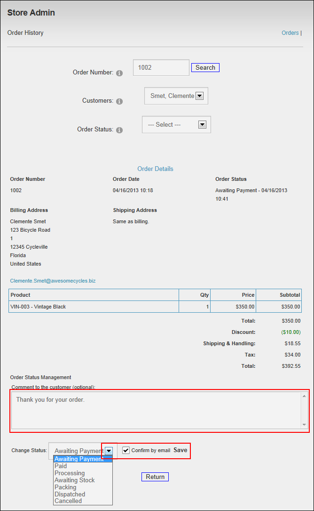
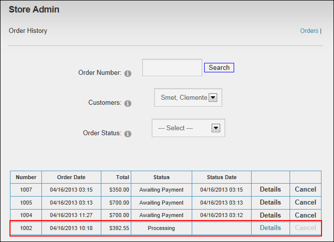

Modifying Order Status
How to modify the status of a customer order using the Store module. The customer is sent an email informing them of the new status of their order. Note: You cannot reverse a canceled order.
- Locate the required order and go to the Order Details page. See "Viewing a Customer Order" or See "Filtering Customer Orders". Note: The current status of the selected order is displayed at the Order Status field.
- Optional. In the Comment to the Customer text box, enter a comment to be included in the email and/or recorded against this order.
- At Change Status, select a new status for the order from these options: Awaiting Payment, Paid, Processing, Awaiting Stock, Packing, Dispatched, Canceled.

- At Confirm By Email, select from these option:
- Mark
 the check box to send email notification to the customer of this status change. This is the default option.
the check box to send email notification to the customer of this status change. This is the default option.- Optional. In the Order Status Management text box, enter a comment to be included in the email message to this customer.
- Unmark
 the check box if you don't want to send a message informing the customer of the status change.
the check box if you don't want to send a message informing the customer of the status change.
- Click the Save link. This returns you to the Order History page where you can view the updated Status. Note: Status Date field does not update for Processing status.

Modified Orders Status on the Order History page